Pathline: design preview
Every screen of the Pathline desktop app, running on its own with sample data. Nothing is saved, and machine actions are pretend. Read DESIGN-BRIEF.md first. The pages are best viewed at 1440 × 900, the app's window size. Opening a page from here resets the sample data. After that, moving between pages keeps your edits for that browser tab.
With sample data
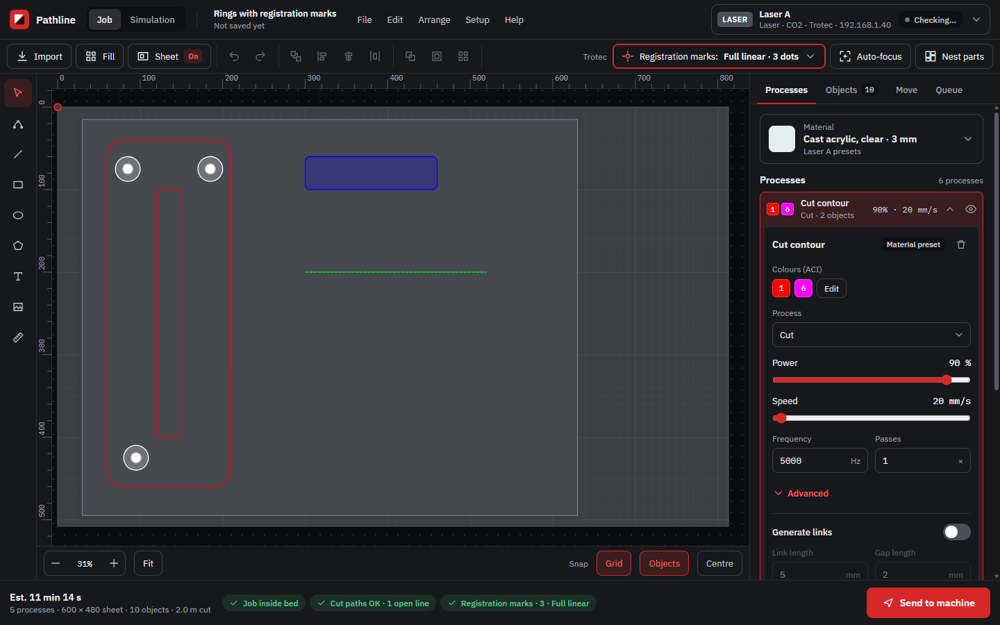
JobImport, arrange, processes, objects, move, queue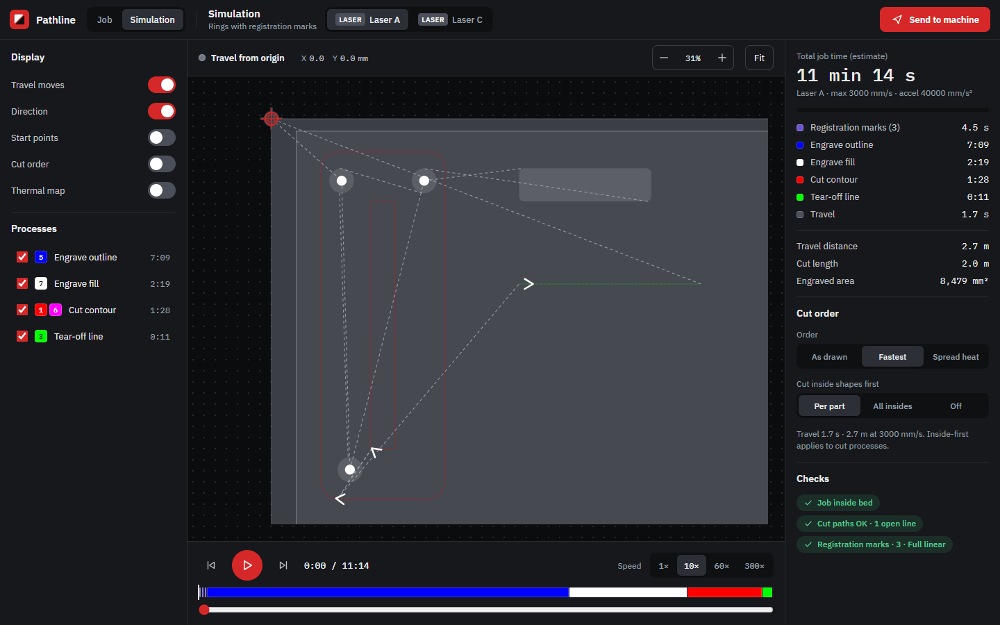
SimulationToolpath playback, time estimate, thermal map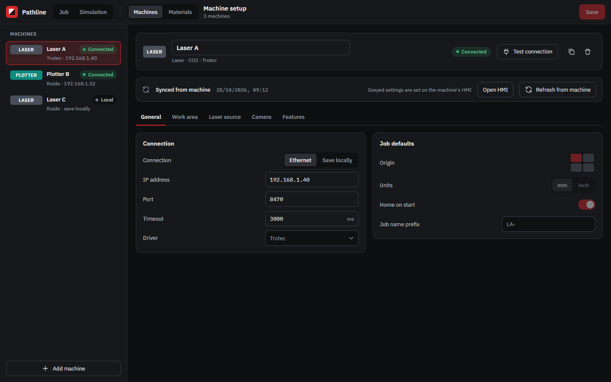
Setup → MachinesConnection and machine settings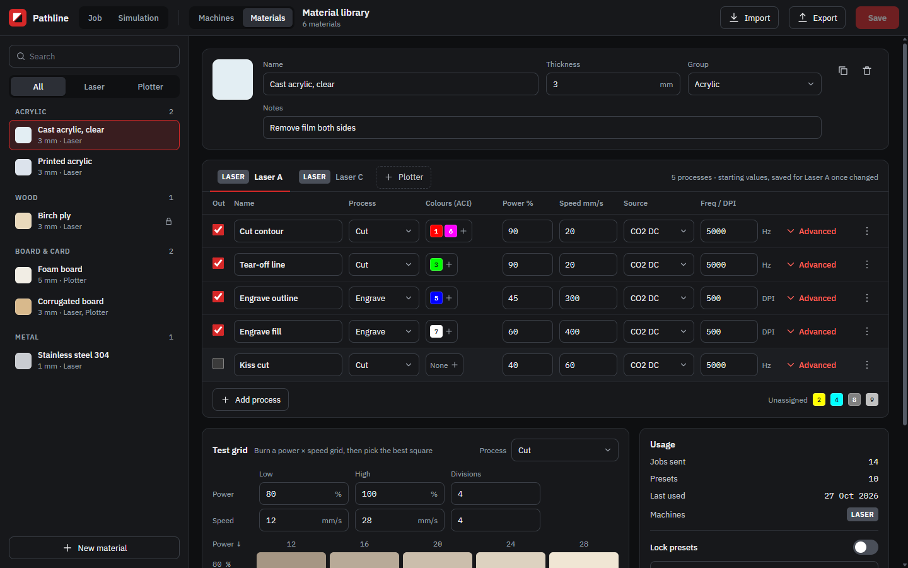
Setup → MaterialsMaterial library, presets per machine, test gridFirst run (no machines or materials)
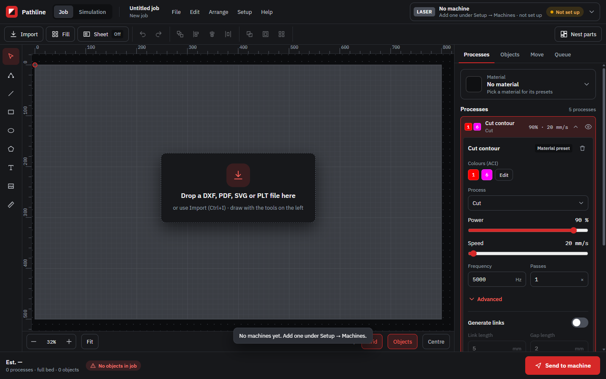
JobStand-in bed until a machine is added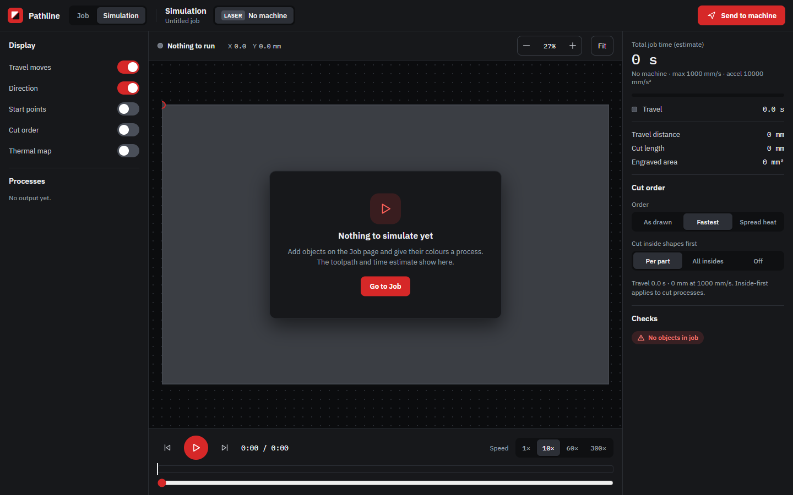
SimulationNothing to run yet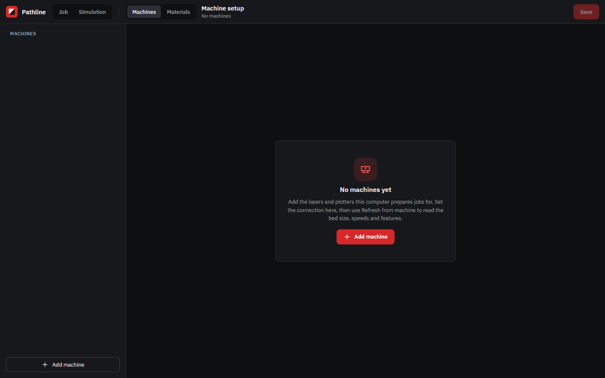
Setup → MachinesEmpty state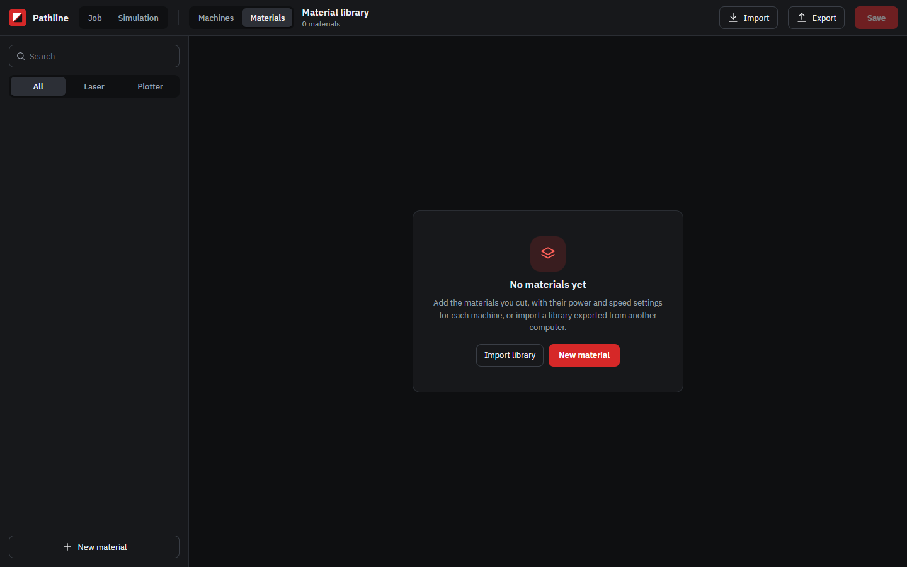
Setup → MaterialsEmpty stateDialogs, menus and other states
These are drawn by src/ui/app.js and the page code, not by the page templates. The screenshots show how they look today. DESIGN-BRIEF.md says how to open each one.
 Menu barFile · Edit · Arrange · Setup · Help
Menu barFile · Edit · Arrange · Setup · Help

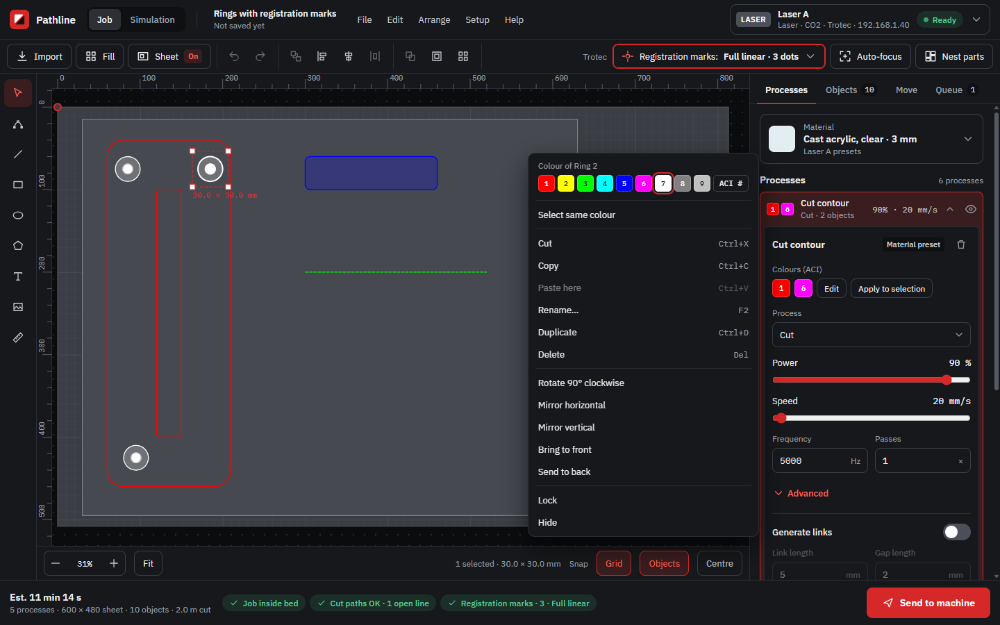
Right-click menuColour swatches and object actions Send to machineChecks, then progress
Send to machineChecks, then progress
 Job overrides promptGo back · Revert · Continue
Job overrides promptGo back · Revert · Continue

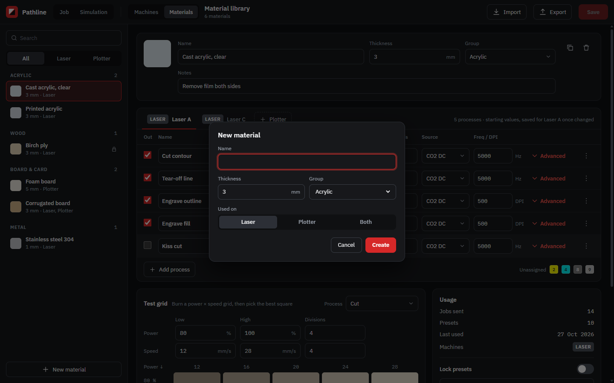
New materialStandard form dialog Thermal mapSimulation, lasers only
Thermal mapSimulation, lasers only
 Move tabJog, home, origin, frame
Move tabJog, home, origin, frame

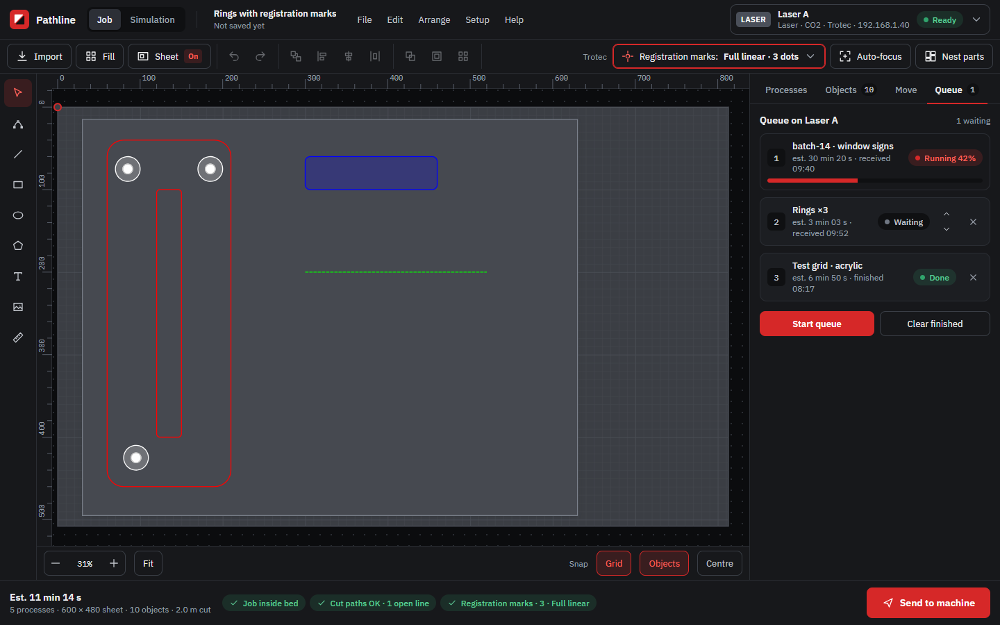
Queue tabThe machine's own job queue